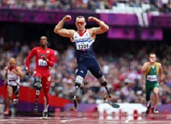

Amputees
An amputee is one who does not have all or part of a limb (arms and legs). Not all amputees are the same. Some athletes were born without a member or part of a member. Others have lost limbs or limbs due to illness (such as cancer or diabetes), or as a result of an accident. Amputations can affect the balance and walking ability of an individual. In order to improve their locomotion, some athletes use prostheses.